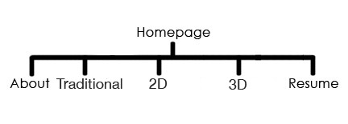

For my final project, I decided to make a portfolio website. I was already planning on using my knowledge gained through this course to create myself a portfolio website, so this is an ideal project for myself. I'm also going to be graduating next semester, and having a portfolio website when applying for jobs is key. I want my main focus to be on my 3D work while also showcasing other work I have done. I want to have a home page, about page, a traditional art page, a 2D graphics page, a 3D graphics page, and a resume page.
